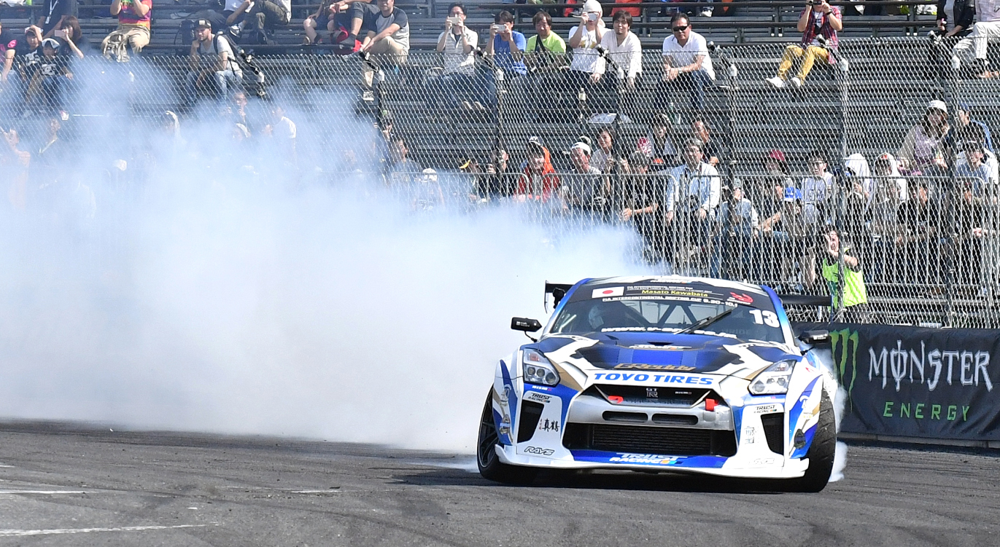

Автори: Sammy Lee | Trots Yura
Читати 5 хв
Опубліковано 24.08.2022 | 1:30 GMT+3
Брати Хоунтонджі, Джо та Еліас, більш знані як Red Bull Driftbrothers, одні з найвідоміших дрифтерів. І навіть вони скажуть, що дрифтинг не так вже й просто зрозуміти.
Дрифтинг, утім, – одна з найбільш захопливих (і з таких, що найшвидше розвиваються) дисциплін у моторспорті, яка вимагає від водіїв балансу швидкості, стилю та безстрашності. За словами Джо, учасники змагаються «людина проти людини, машина проти машини».
Цей спорт був розроблений на серпантинних гірських дорогах Японії наприкінці 70-х. Усе, що треба знати про дрифтинг початку 80-х років, стосується двох гонщиків: Куніякі Такагаші та Кейіті Цутія (відомий як Король Дрифту) почали проходити повороти все швидше, вивертаючи автомобіль в інший бік. Це, як пояснює Джо, і є «першим етапом розвитку дрифтингу як моторспорту».
У 1987 році Цутія зняв за допомогою журналістів фільм Pluspy, де продемонстрвував можливості дрифтингу. Ця стрічка серйозно вплинула на розвиток дрифтингу. Але найбільший поштовх дала інша – «Токійський Дрифт», третя частина Форсажу.
Завдяки сучасним зіркам на кшалт Майка Віддетта та таким серіям, як Formula Drift у США та Японії, популярність дрифтингу продовжує зростати.
Дрифтинг – мистецтво проїжджати повороти якомога швидше на автомобілі, який при цьому їде не лише вперед, але й боком. Такий стиль дозволяє водію швидко вирівняти машину після виходу з повороту. При цьому Еліас відзначає, що намагання контролювати авто, коли його шини не зчіпляються з дорогою, означає боротьбу із законами фізики.
Як відомо будь-якому автолюбителю, можна змусити машину рухатися боком, або заблокувавши задні колеса, або граючись із переносом ваги. Для початківців, на думку Еліаса, найпростіший метод дрифтингу – такий: «зайти в поворот, натиснути на гальма; задні колеса заблокуються, а потім просто повільно повертати кермо стільки, скільки потрібно, після чого повільно відпускати гальмо, натискати на дроссель та тримати ручку».
Професіонали, своєю чергою, володіють різноманітними стилями та техніками дрифтингу за допомогою гальмування та зчеплення.
Машини для дрифтингу не повинні бути дуже дорогими, адже їх може кинути у повороті або вдарити об бетонну стіну. Через те, що ніхто не застрахований від аварій, на машини для дрифтингу не витрачають величезні суми грошей. З іншого боку, такі машини – це не просто вживані авто, які ти можеш купити на ринку.
По суті, машини для дрифтингу – це правильно спроектовані гоночні авто, які в кабіні дуже схожі на ралійні. Вони мають бути легкими та на задньому приводі, але при цьому дуже потужними: від 1000 кінських сил.
«Ми використовуємо цю потужність не лише для диму, але й для того, щоб машина могла їхати боком, – пояснює Еліас. – Зараз я їжджу на машині своєї мрії, BMW E30». Джо їздить на Nissan 240SX S13. «Вона дуже потужна, гарно виглядає і легка в керуванні», – запевняє він.
Інші популярні автомобілі для дрифтингу – Nissan 370Z, Nissan Silvia S14, Nissan Silvia S15, Toyota GT86, BMW E46, Ford Mustang and Mazda MX-5 та інші.
«Дуелі – це те, що виділяє дрифтинг від інших моторспортивних видів», – стверджує Джо.
У цих заїздах на вибування одна машина стартує перед іншою. Той, хто лідирує в старті, повинен робити все те, що робив у кваліфікації, але ще видовищніше та ефектніше.
Завдання переслідувача полягає в тому, аби перебувати якомога ближче до суперника, повторюючи всі його рухи. Обидва водії повинні показувати ідельний дрифтинг у драматичних ситуаціях.
Made with ❤️
Copyright © 2022 | Privacy Policy